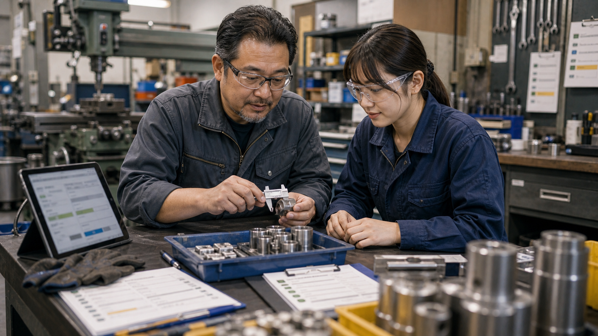
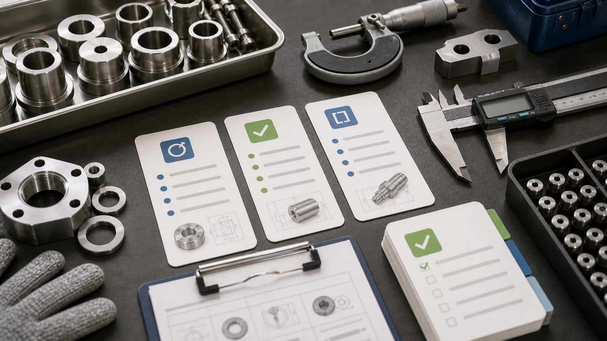
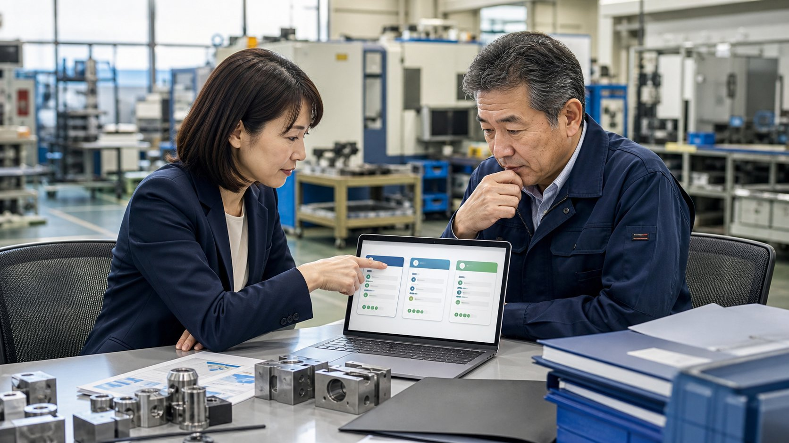

他社の改善事例 / 町工場・製造業
見積前に消えていた1〜2時間を、案件票から始められる仕事に変える
Web発注データ、図面、注文メール、過去単価、材料在庫、納期を先に案件票へまとめ、社長や後継者が価格と納期の判断から入れる状態を作ります。

先に結論
見積の負担は、価格を決める前の探し物にありました。
町工場の見積は、単価表を見れば終わる仕事ではありません。図面の版数、過去案件、材料在庫、協力会社の納期、顧客ごとの要求水準まで確認します。ところが実際には、Web発注画面から明細を落とし、PDFを開き、Excelへ加工する前処理に毎日時間を取られていました。
改善後は、注文メール、図面、Web発注データ、過去見積、材料表を同じ場所に集め、AIが案件票の下書きにまとめる流れに変えます。社長は単価や条件を探す時間を減らし、加工方法、価格、納期を決める仕事に入りやすくなります。
仕事の変化
探し物と転記を減らし、価格と納期を決める時間へ移します。
現場で起きていたこと
必要な情報がWeb発注画面、PDF、メール本文、添付、過去ファイルに分かれ、見積に入る前の読み込みと転記に時間がかかっていました。確認が積み重なるほど、社長は加工方法や粗利を見る前に集中力を使っていました。
変えたこと
AIで先に進めるのは、図面・メールの要点抽出、Web発注データの整理、過去案件の候補検索、材料候補・納期リスク・未確認点の整理までです。社長は、加工方法、品質リスク、価格、粗利、納期、特急対応、顧客事情を中心に確認して決めます。
改善後に残るもの
見積書を作る前に確認質問を返しやすくなるため、条件のズレを早めに潰せます。その分、社長や後継者は価格判断、納期交渉、次の段取りに時間を使えます。
改善後の実感
見積前処理を、案件票から確認できる状態に変えました。
前処理で1〜2時間
Web発注データ、図面、過去単価、材料表を開き直し、加工条件を見る前に集中力を使っていました。
案件票から開始
AIが未確認点、似た案件、材料候補、納期リスクを1枚の案件票にまとめます。
確認質問が早くなる
見積依頼への初動が早まり、顧客への確認質問を当日中に返しやすくなります。
現場の一場面
8時12分、社長はまだ加工の話に入れていませんでした。
朝の工場。現場から機械音が聞こえる中、社長の机には新規見積のメールが3件、図面PDFが5枚、Web発注画面から落とした部品明細、材料会社からの納期返信が並んでいます。本当は加工方法を考えたいのに、まず過去の似た案件を探すところから始まります。
メールの件名は顧客ごとにばらばらで、図面の版数も分かりにくい。過去単価を見つけても、材料や数量が違えばそのまま使えません。社長は現場に呼ばれながら、画面と紙を行ったり来たりします。
改善後は、見積依頼メール、図面、Web発注データ、材料表を案件フォルダへ集めると、AIが案件票の下書きを作る流れにします。似た過去案件、注意寸法、未回答の確認事項、材料候補、納期リスクが並びます。
社長はその票を見て、難しい加工、価格、納期から判断します。昼前のうちに、顧客へ確認質問を返せる日が増えます。速くなるのは見積書の作成だけでなく、商談の立ち上がりです。
改善のイメージ
Web発注データ、図面、過去単価を同じ入口に置くと、社長が見る順番も変わります。

図面・過去単価・材料を同じ案件票にそろえる
図面、過去単価、材料候補が同じ場所に並ぶと、社長は価格を決める前の確認に迷いにくくなります。

材料手配と希望納期を同じ表で見る
材料が間に合うか、協力会社の納期に無理がないかを、価格判断の前に同じ表で確認できます。
最後の見積判断は社長が持つ
AIがそろえた材料を見て、加工の難しさ、品質リスク、顧客事情は社長が判断します。
導入前
導入前は、見積に入る前に図面・過去単価・材料・納期を社長が探し集めていました。
必要な情報がPDF、メール本文、添付、Web発注画面、過去ファイルに分かれ、読み込みと転記に時間がかかっていました。
似た形状や材料の履歴を、担当者の記憶とファイル名で探していました。
未確認点に気づくのが遅く、顧客への質問が夕方になりがちでした。
仕事の流れ
見積依頼を受けたら、AIが案件票を下書きし、社長が価格・納期・受注可否を決めます。
顧客名、品番、部品数、図面版数、数量、納期希望をAIが読み取ります。
似た案件、単価の幅、材料候補、加工上の注意点を抽出します。
寸法、数量、納期、加工条件など、顧客へ確認すべき質問をまとめます。
最終金額、受注可否、顧客への交渉は人が行います。
人とAIの分担
価格を決める前の準備と、社長が持つ判断を分けます。
AIに任せた準備
- 図面・メールの要点抽出
- 過去案件の候補検索
- 材料候補・納期リスク・未確認点の整理
- 顧客への確認質問下書き
社長が決める判断
- 加工方法と品質リスクの判断
- 価格、粗利、納期の決定
- 特急対応や顧客関係の判断
- 正式見積の送信判断